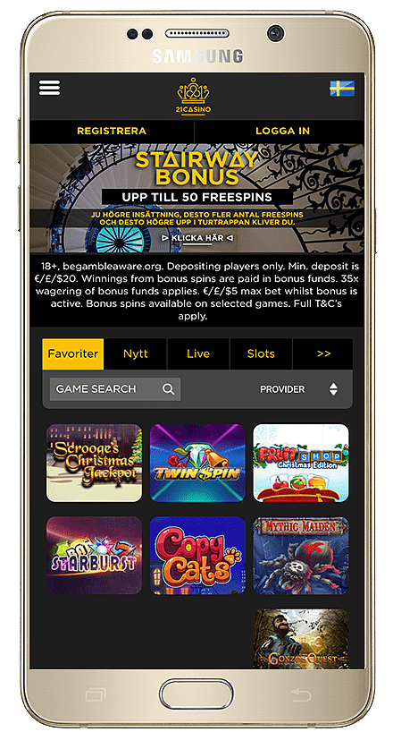
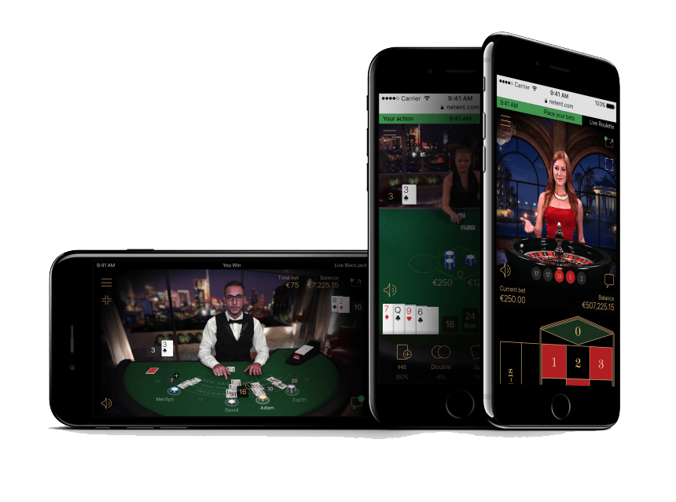

Descarci aplicația și obții instant acces la toate jocurile care te interesează? Noi ne-am îngrijit să îți selectăm doar cele mai avantajoase aplicații, care îți oferă avantaje de fiecare dată când joci! Ești gata să te bucuri de super acțiune și câștiguri oriunde te-ai afla?
Aplicații mobile cu live casino pentru toți jucătorii
Pentru că jucătorii își doresc să aibă lângă ei cazinoul favorit, operatorii acestui tip de platforme au creat aplicații dedicate. În acest mod jucătorii pot să joace atunci când vor, de unde vor și cât timp își doresc. Iată de ce este avantajos să optezi pentru aplicația pentru mobil dacă îți dorești să joci în secțiunea de live casino:
• Bonusuri și recompense – pe lângă bonusurile disponibile în cazinoul principal, mulți operatori de casino oferă și bonificații pentru accesarea jocurilor din secțiunea de live casino.
• Jocuri de casino bine structurate – chiar dacă este vorba despre un număr limitat de jocuri (ruletă și blackjack), acestea sunt foarte bine configurate și beneficiază de aportul dealerilor reali.
• Descărcare gratuită – toate aceste aplicații sunt disponibile spre a fi descărcate gratuit, ceea ce reprezintă un avantaj major pentru orice jucător.
• Accesibile pentru multiple sisteme de operare mobile – sunt disponibile pentru iOS și Android, dar de pe mobil (în varianta optimizată) pot fi încercate și de pe alte sisteme, precum Blackberry sau Windows Mobile.
• Poți opta pentru modul Portait/Landscape – dispui de posibilitatea de selectare a unui anumit tip de vizualizare a camerei de joc (care ți se pare a fi cel mai accesibil);
• Interfața de navigare prin camerele cu dealeri live este intuitivă și ușor de accesat – acest lucru se datorează faptului că toți jucătorii trebuie să poată juca într-un mod cât mai simplu.
• Jocuri speciale, create în mod exclusiv pentru mobil – Sic Bo, 3 Card Poker, Caribbean Stud Poker, Dragon Triger, Dream Catcher sunt doar câteva dintre jocurile pe care le poți încerca în exclusivitate în aplicațiile mobile ale cazinourilor.
• Gamă extinsă de jocuri de noroc disponibile în live casino – este destul de posibil să poți juca Baccarat, Casino Hold’em, Poker și alte jocuri în această secțiune. Dat fiind faptul că platformele mobile sunt din ce în ce mai prezente în viața jucătorilor, atenția brandurilor din domeniu se îndreaptă către acest tip de distracție în viitor.
• Bonusuri acordate la accesarea aplicației pe mobil – anumiți operatori de cazinou (pe care îi găsești în lista noastră de recomandări) pun mare preț pe jucătorii care le accesează aplicațiile mobile. Ceea ce i-a determinat pe aceștia să le ofere membrilor înregistrați o serie de bonificații pentru accesarea serviciului de pe mobil.
Noi am analizat toate aplicațiile pentru mobil și ți-am selectat o serie de cazinouri cu adevărat interesante. Optează pentru oricare dintre ele și îți garantăm că o să te distrezi pe cinste!
De ce live casino pe mobil?
Dispozitivele mobile sunt din ce în ce mai performante. Îți oferă un nivel grafic și audio, de multe ori, superior celui de pe desktop. În plus, telefonul sau tableta sunt mereu la îndemână și poți să accesezi aplicația din câteva atingeri. Nivelul de confort este mult mai ridicat decât în cazul desktopurilor (folosești ecranul tactil în dauna mouse-ului).
De asemenea, atunci când joci în cazinourile live de pe mobil beneficiezi de o experiență pe care ți-o poți personaliza mult mai bine. Bonusurile obținute pentru accesarea de pe mobil a cazinoului îți permit să obții mai multe șanse de câștig. Așa că, dacă vrei să te bucuri de una dintre cele mai atractive experiențe din viața ta, joacă de pe mobil!
Cum îți selectezi aplicația de cazinou cu live casino
În momentul în care vrei să joci într-un cazino de pe aplicație, urmărește aceste criterii:
• Serviciul de live casino să îți ofere acces la cazinouri cunoscute, cu dealeri reali profesioniști;
• Live streaming-ul să fie de calitate superioară;
• Gama de jocuri să fie variată;
• Disponibilitate 24/7;
• Bonusuri la accesarea de pe mobil sau la înregistrarea în live casino;
• Descărcare gratuită a aplicației;
• Interfață cât mai simplă și cu maximul de caracteristici, precum varianta pentru desktop.
Este timpul să îți alegi cazinoul, să descarci aplicația, să-ți creezi un cont și să te delectezi cu jocurile din live casino. Înscrie-te acum și descoperă cele mai noi surprize pregătite de operatori pentru utilizatorii aplicațiilor de cazinou pe mobil!

Contactează-ne
Pentru întrebări sau reclame de afaceri ne găsiți.